import pandas as pd
import numpy as np
import matplotlib.pyplot as pltTutorial 3 - Matplotlib
Aprendendo a fazer gráficos
Carregando os pacotes
Lendo os dados
Você pode baixar os dados aqui.
imdb_filmes = pd.read_csv("pydata3/imdb_filmes.csv")imdb_filmes.info()<class 'pandas.core.frame.DataFrame'>
RangeIndex: 11340 entries, 0 to 11339
Data columns (total 20 columns):
# Column Non-Null Count Dtype
--- ------ -------------- -----
0 id_filme 11340 non-null object
1 titulo 11340 non-null object
2 ano 11339 non-null float64
3 data_lancamento 11340 non-null object
4 generos 11340 non-null object
5 duracao 11340 non-null int64
6 pais 11340 non-null object
7 idioma 11261 non-null object
8 orcamento 6389 non-null float64
9 receita 6366 non-null float64
10 receita_eua 5997 non-null float64
11 nota_imdb 11340 non-null float64
12 num_avaliacoes 11340 non-null int64
13 direcao 11340 non-null object
14 roteiro 11325 non-null object
15 producao 11220 non-null object
16 elenco 11336 non-null object
17 descricao 11326 non-null object
18 num_criticas_publico 11330 non-null float64
19 num_criticas_critica 11300 non-null float64
dtypes: float64(7), int64(2), object(11)
memory usage: 1.7+ MBimdb_filmes.describe()| ano | duracao | orcamento | receita | receita_eua | nota_imdb | num_avaliacoes | num_criticas_publico | num_criticas_critica | |
|---|---|---|---|---|---|---|---|---|---|
| count | 11339.000000 | 11340.000000 | 6.389000e+03 | 6.366000e+03 | 5.997000e+03 | 11340.000000 | 1.134000e+04 | 11330.000000 | 11300.000000 |
| mean | 1989.452244 | 99.691975 | 1.903052e+07 | 5.468264e+07 | 3.147534e+07 | 6.102487 | 3.591951e+04 | 138.221977 | 65.660885 |
| std | 25.548495 | 17.649559 | 3.238295e+07 | 1.433980e+08 | 6.033264e+07 | 1.128953 | 1.051027e+05 | 303.109281 | 85.890610 |
| min | 1914.000000 | 45.000000 | 0.000000e+00 | 1.600000e+01 | 2.520000e+02 | 1.300000 | 1.001000e+03 | 1.000000 | 1.000000 |
| 25% | 1973.000000 | 89.000000 | 1.500000e+06 | 5.030680e+05 | 1.007583e+06 | 5.500000 | 1.877000e+03 | 31.000000 | 17.000000 |
| 50% | 1997.000000 | 97.000000 | 6.500000e+06 | 9.521381e+06 | 1.067257e+07 | 6.300000 | 4.736500e+03 | 55.000000 | 35.000000 |
| 75% | 2011.000000 | 108.000000 | 2.200000e+07 | 4.309351e+07 | 3.600150e+07 | 6.900000 | 2.106250e+04 | 127.000000 | 78.000000 |
| max | 2020.000000 | 271.000000 | 3.560000e+08 | 2.797801e+09 | 9.366622e+08 | 9.300000 | 2.278845e+06 | 8869.000000 | 909.000000 |
imdb_filmes.sample(8)| id_filme | titulo | ano | data_lancamento | generos | duracao | pais | idioma | orcamento | receita | receita_eua | nota_imdb | num_avaliacoes | direcao | roteiro | producao | elenco | descricao | num_criticas_publico | num_criticas_critica | |
|---|---|---|---|---|---|---|---|---|---|---|---|---|---|---|---|---|---|---|---|---|
| 4965 | tt0048260 | Kismet | 1955.0 | 1955-12-23 | Adventure, Musical, Fantasy | 113 | USA | English | 2692960.0 | NaN | NaN | 6.3 | 1329 | Vincente Minnelli, Stanley Donen | Charles Lederer, Luther Davis | Metro-Goldwyn-Mayer (MGM) | Howard Keel, Ann Blyth, Dolores Gray, Vic Damo... | A roguish poet is given the run of the schemin... | 42.0 | 23.0 |
| 5526 | tt0049552 | Nightfall | 1956.0 | 1958-06-20 | Crime, Drama, Film-Noir | 78 | USA | English, Spanish, Italian | NaN | NaN | NaN | 7.2 | 3204 | Jacques Tourneur | Stirling Silliphant, David Goodis | Copa Productions | Aldo Ray, Brian Keith, Anne Bancroft, Jocelyn ... | Through a series of bizarre coincidences, an a... | 51.0 | 39.0 |
| 6362 | tt0041822 | Rope of Sand | 1949.0 | 1949-08-03 | Adventure, Film-Noir | 104 | USA | English, Afrikaans | NaN | NaN | NaN | 6.8 | 1196 | William Dieterle | Walter Doniger, John Paxton | Wallis-Hazen | Burt Lancaster, Paul Henreid, Claude Rains, Pe... | A man abused by a sadistic mining company cop ... | 21.0 | 13.0 |
| 4728 | tt5179598 | Billionaire Boys Club | 2018.0 | 2018-07-17 | Biography, Drama, Thriller | 108 | USA | English | 15000000.0 | 2713955.0 | 1349.0 | 5.6 | 10299 | James Cox | James Cox, Captain Mauzner | Armory Films | Ansel Elgort, Kevin Spacey, Taron Egerton, Emm... | A group of wealthy boys in Los Angeles during ... | 70.0 | 41.0 |
| 597 | tt0029843 | The Adventures of Robin Hood | 1938.0 | 1939-01-26 | Action, Adventure, Romance | 102 | USA | English | 1900000.0 | NaN | NaN | 7.9 | 46382 | Michael Curtiz, William Keighley | Norman Reilly Raine, Seton I. Miller | Warner Bros. | Errol Flynn, Olivia de Havilland, Basil Rathbo... | When Prince John and the Norman Lords begin op... | 279.0 | 107.0 |
| 914 | tt0093800 | Psychos in Love | 1987.0 | 1987-05-01 | Comedy, Horror | 88 | USA | English | 75000.0 | NaN | NaN | 5.9 | 1071 | Gorman Bechard | Gorman Bechard, Carmine Capobianco | Beyond Infinity | Carmine Capobianco, Patti Chambers, Carla Brag... | A strip-joint owner and a manicurist find that... | 39.0 | 38.0 |
| 10697 | tt0461770 | Enchanted | 2007.0 | 2007-12-07 | Animation, Comedy, Family | 107 | USA | English | 85000000.0 | 340487652.0 | 127807262.0 | 7.0 | 173962 | Kevin Lima | Bill Kelly | Walt Disney Pictures | Amy Adams, Patrick Dempsey, James Marsden, Tim... | A young maiden in a land called Andalasia, who... | 421.0 | 231.0 |
| 5402 | tt0096874 | Back to the Future Part II | 1989.0 | 1989-12-22 | Adventure, Comedy, Sci-Fi | 108 | USA | English | 40000000.0 | 335973020.0 | 119000002.0 | 7.8 | 467662 | Robert Zemeckis | Robert Zemeckis, Bob Gale | Universal Pictures | Michael J. Fox, Christopher Lloyd, Lea Thompso... | After visiting 2015, Marty McFly must repeat h... | 421.0 | 149.0 |
Limpeza dos dados
Vamos converter a coluna data_lancamento para formato data.
# Get all unique non-date values from `data_lancamento`
non_date_values = imdb_filmes[pd.to_datetime(imdb_filmes['data_lancamento'], errors='coerce').isna()]['data_lancamento'].unique()
if (len(non_date_values) > 20):
# Sample 20 of them if there are too many unique values
print(f"Non-date values in `data_lancamento`: {np.random.choice(non_date_values, 20, replace=False)}")
else:
# Otherwise print all unique non-date values from `data_lancamento`
print(f"Non-date values in `data_lancamento`: {non_date_values}")Non-date values in `data_lancamento`: ['1989' '2010' '1990' '1970' '1974' '1967' '1973' '2006' '1971' '1983'
'1966' '1999' '1956' '2005' '1927' '1948' '1943' '1961' '1997' '2009']imdb_filmes['data_lancamento']=pd.to_datetime(imdb_filmes['data_lancamento'], format='%Y-%m-%d',
errors='coerce')Tipos de visualizações
A visualização de dados é uma ferramenta poderosa que não só simplifica a compreensão de grandes volumes de dados, mas também desempenha um papel crucial na estatística aplicada e no aprendizado de máquina. Imagine o potencial de desbloquear insights valiosos e identificar padrões ocultos em seus conjuntos de dados! Com um conhecimento prévio do assunto, você pode explorar as nuances dos dados e revelar conexões significativas que podem surpreender e iluminar tanto você quanto sua audiência.

Gráfico de Dispersão
Quando há necessidade de encontrar correlações, são utilizados os gráficos de dispersão. Se existir um conjunto de dados XY, então um gráfico de dispersão é utilizado para encontrar a relação entre as variáveis X e Y.
As coordenadas x e y devem ser numéricas necessariamente. Vamos usar como exemplo, o dataframe imdb_filmes.
No exemplo, a posição do ponto no eixo x pode ser dada pela coluna orcamento e a posição do ponto no eixo y pela coluna receita.
plt.scatter(imdb_filmes['orcamento'], imdb_filmes['receita'])
plt.show()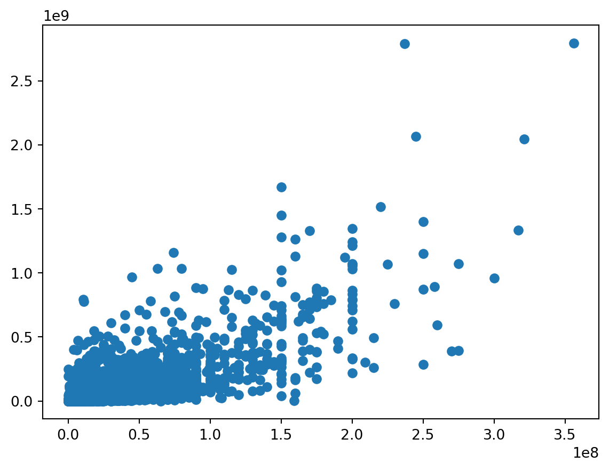
Deixando o gráfico mais informativo:
plt.scatter(imdb_filmes['orcamento'], imdb_filmes['receita'],color='darkred',alpha=0.2)
plt.title('Gráfico de Dispersão entre Orçamento x Receita')
plt.xlabel('Orçamento')
plt.ylabel('Receita')
plt.show()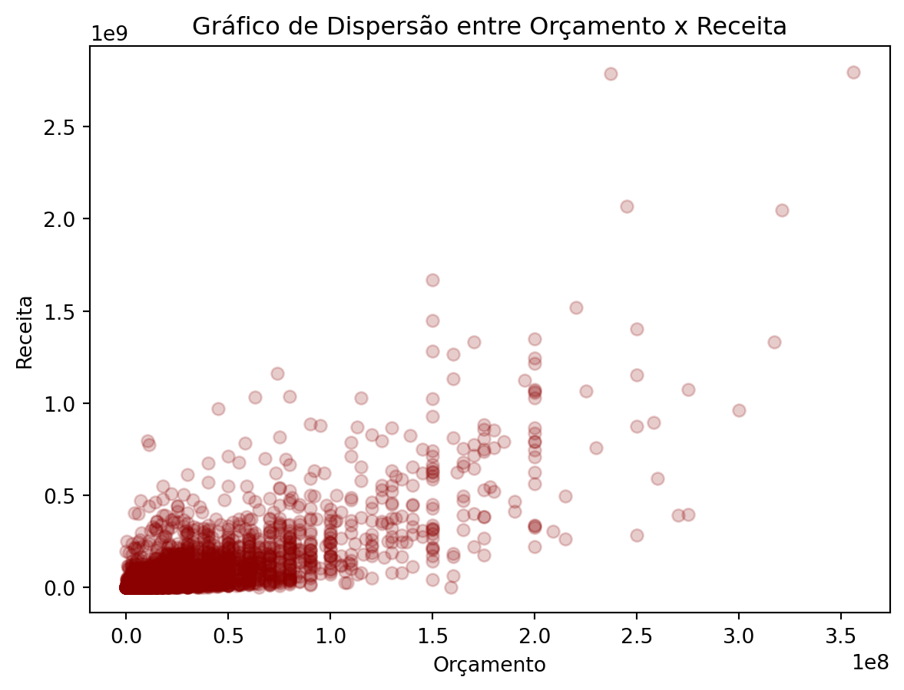
Gráfico de Barras
Um gráfico de barras também exibe tendências ao longo do tempo. No caso de múltiplas variáveis, um gráfico de barras pode facilitar a comparação dos dados para cada variável em todos os momentos no tempo. Por exemplo, um gráfico de barras pode ser utilizado para comparar o crescimento da empresa ano a ano.
Vamos usar o dataframe imdb_filmes para exemplificar, ordenando as linhas por ordem decrescente de nota_imdb. Primeiro vamos gerar o gráfico com as configuração padrão.
imdb_summary = imdb_filmes.sort_values('nota_imdb',
ascending=False).head(8)plt.bar(imdb_summary['titulo'], imdb_summary['nota_imdb'])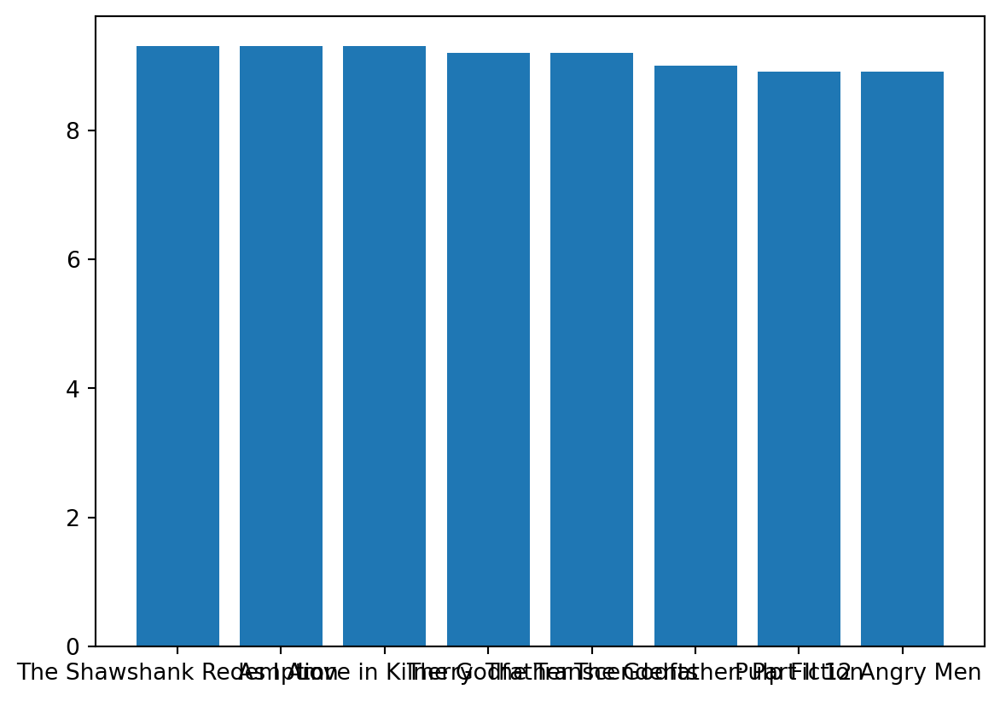
Mas os nomes dos filmes estão sobrepostos, então neste caso é recomendável realizar um gráfico de barras horizontais.
plt.barh(imdb_summary['titulo'], imdb_summary['nota_imdb'])
plt.title('Top 10 Filmes por Nota IMDB')
plt.xlabel('Nota IMDB')
plt.show()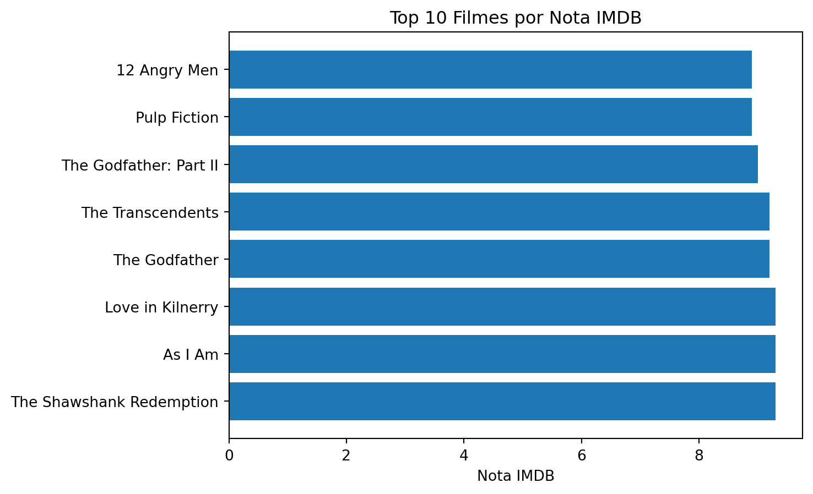
Gráfico de linha
Gráficos de linhas são utilizados para exibir tendências ao longo do tempo. O eixo X é geralmente utilizado para representar um período, enquanto o eixo Y é utilizado para representar a quantidade associada ao período de tempo no eixo X. Por exemplo, um gráfico de linhas pode ilustrar o horário de pico de visitas em um shopping durante o dia, dividido por dias da semana e horas.
Vamos fazer um gráfico utilizando a coluna data_lancamento
imdb_lancamento = imdb_filmes.groupby('data_lancamento').agg({'titulo':"count",'nota_imdb':'mean','duracao':'mean'})
imdb_lancamento.head()| titulo | nota_imdb | duracao | |
|---|---|---|---|
| data_lancamento | |||
| 1914-03-08 | 1 | 6.1 | 61.0 |
| 1914-08-24 | 1 | 6.4 | 78.0 |
| 1914-12-21 | 1 | 6.3 | 82.0 |
| 1915-03-21 | 1 | 6.3 | 195.0 |
| 1915-09-13 | 1 | 6.8 | 72.0 |
plt.plot(imdb_lancamento.index, imdb_lancamento['nota_imdb'])
plt.title('Tendência de notas imdb ao longo do tempo')
plt.xlabel('Data de Lançamento')
plt.ylabel('Nota IMDB')
plt.show()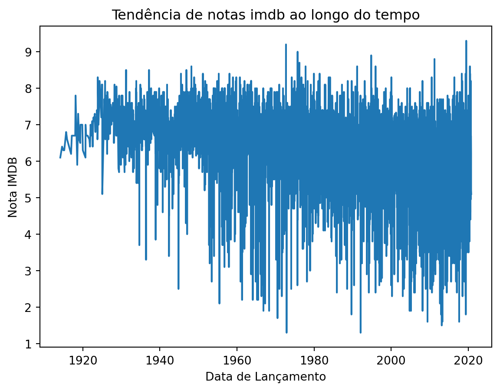
é interessante porém, fica difícil de ver a tendência, vamos agrupar os filmes por ano e refazer o gráfico.
imdb_anual = imdb_filmes.groupby(pd.Grouper(key='data_lancamento', freq='Y'))['nota_imdb'].mean()
imdb_anual.head()data_lancamento
1914-12-31 6.266667
1915-12-31 6.566667
1916-12-31 6.200000
1917-12-31 6.700000
1918-12-31 6.925000
Name: nota_imdb, dtype: float64plt.plot(imdb_anual.index, imdb_anual.values)
plt.title('Tendência de notas imdb anuais ao longo do tempo')
plt.xlabel('Ano de Lançamento')
plt.ylabel('Nota Média IMDB')
plt.show()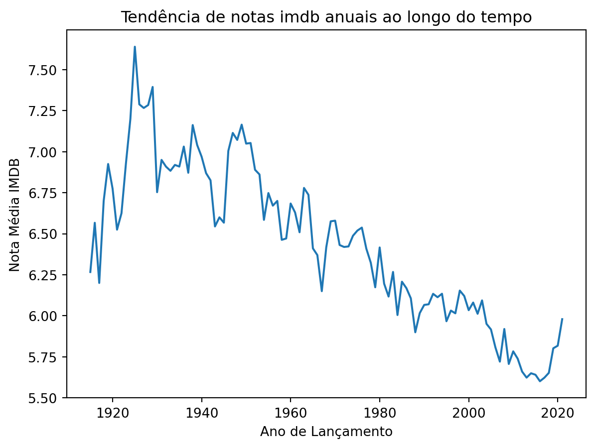
Também podemos plotar duas ou mais linhas. Vamos calcular intervalo interquartil e inclui-la no gráfico anterior.
imdb_anual_25th = imdb_filmes.groupby(pd.Grouper(key='data_lancamento', freq='Y'))['nota_imdb'].quantile(0.25)
imdb_anual_75th = imdb_filmes.groupby(pd.Grouper(key='data_lancamento', freq='Y'))['nota_imdb'].quantile(0.75)plt.plot(imdb_anual.index, imdb_anual.values,label='Média')
plt.plot(imdb_anual_25th.index, imdb_anual_25th.values,label='25 Percentil')
plt.plot(imdb_anual_75th.index, imdb_anual_75th.values,label='75 Percentil')
plt.title('Tendência de notas médias e IRQ do imdb anuais ao longo do tempo')
plt.xlabel('Ano de Lançamento')
plt.ylabel('Nota IMDB')
plt.legend()
plt.show()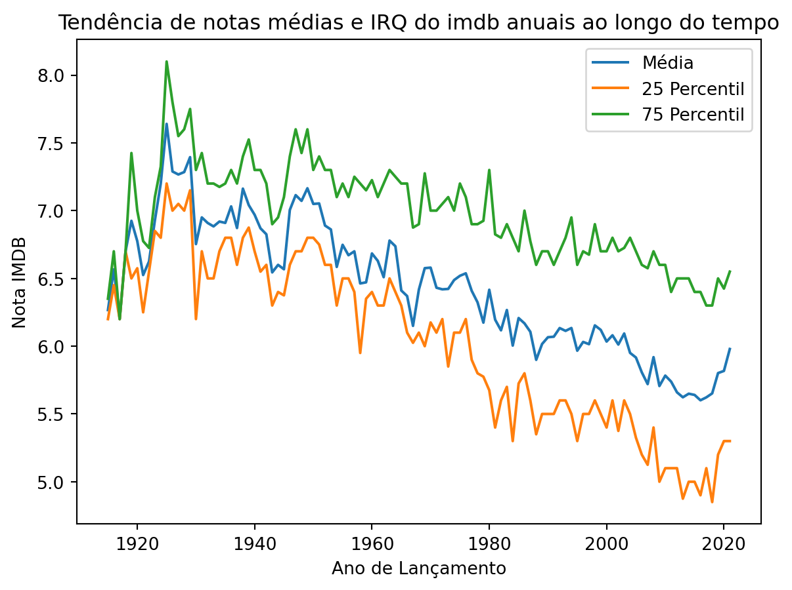
Gráfico de Boxplot
Um gráfico de boxplot, também conhecido como diagrama de caixa, é uma ferramenta de visualização estatística que fornece uma representação compacta e informativa da distribuição de um conjunto de dados. Consiste em um retângulo (“caixa”) que se estende de um quartil ao outro, com uma linha vertical (ou “whisker”) estendendo-se de cada extremidade da caixa para representar a amplitude dos dados fora do intervalo interquartil.
imdb_filmes['ano'] = imdb_filmes['data_lancamento'].dt.year
imdb_filmes['decada'] = imdb_filmes['ano'] // 10 * 10
imdb_filmes['decada'].astype('category')
imdb_filmes.head()| id_filme | titulo | ano | data_lancamento | generos | duracao | pais | idioma | orcamento | receita | ... | nota_imdb | num_avaliacoes | direcao | roteiro | producao | elenco | descricao | num_criticas_publico | num_criticas_critica | decada | |
|---|---|---|---|---|---|---|---|---|---|---|---|---|---|---|---|---|---|---|---|---|---|
| 0 | tt0092699 | Broadcast News | 1988.0 | 1988-04-01 | Comedy, Drama, Romance | 133 | USA | English, Spanish, French, German | 20000000.0 | 67331309.0 | ... | 7.2 | 26257 | James L. Brooks | James L. Brooks | Amercent Films | William Hurt, Albert Brooks, Holly Hunter, Rob... | Take two rival television reporters: one hands... | 142.0 | 62.0 | 1980.0 |
| 1 | tt0037931 | Murder, He Says | 1945.0 | 1945-06-23 | Comedy, Crime, Mystery | 91 | USA | English | NaN | NaN | ... | 7.1 | 1639 | George Marshall | Lou Breslow, Jack Moffitt | Paramount Pictures | Fred MacMurray, Helen Walker, Marjorie Main, J... | A pollster stumbles on a family of murderous h... | 35.0 | 10.0 | 1940.0 |
| 2 | tt0183505 | Me, Myself & Irene | 2000.0 | 2000-09-08 | Comedy | 116 | USA | English, German | 51000000.0 | 149270999.0 | ... | 6.6 | 219069 | Bobby Farrelly, Peter Farrelly | Peter Farrelly, Mike Cerrone | Twentieth Century Fox | Jim Carrey, Renée Zellweger, Anthony Anderson,... | A nice-guy cop with Dissociative Identity Diso... | 502.0 | 161.0 | 2000.0 |
| 3 | tt0033945 | Never Give a Sucker an Even Break | 1947.0 | 1947-05-02 | Comedy, Musical | 71 | USA | English | NaN | NaN | ... | 7.2 | 2108 | Edward F. Cline | John T. Neville, Prescott Chaplin | Universal Pictures | W.C. Fields, Gloria Jean, Leon Errol, Billy Le... | A filmmaker attempts to sell a surreal script ... | 35.0 | 18.0 | 1940.0 |
| 4 | tt0372122 | Adam & Steve | 2007.0 | 2007-05-17 | Comedy, Drama, Music | 99 | USA | English | NaN | 309404.0 | ... | 5.9 | 2953 | Craig Chester | Craig Chester | Funny Boy Films | Malcolm Gets, Cary Curran, Craig Chester, Park... | Follows two New York city couples -- one heter... | 48.0 | 15.0 | 2000.0 |
5 rows × 21 columns
data_to_plot = [imdb_filmes[imdb_filmes['decada'] == decada]['nota_imdb'] for decada in imdb_filmes['decada'].unique()]
plt.boxplot(data_to_plot, showmeans=True)
plt.show()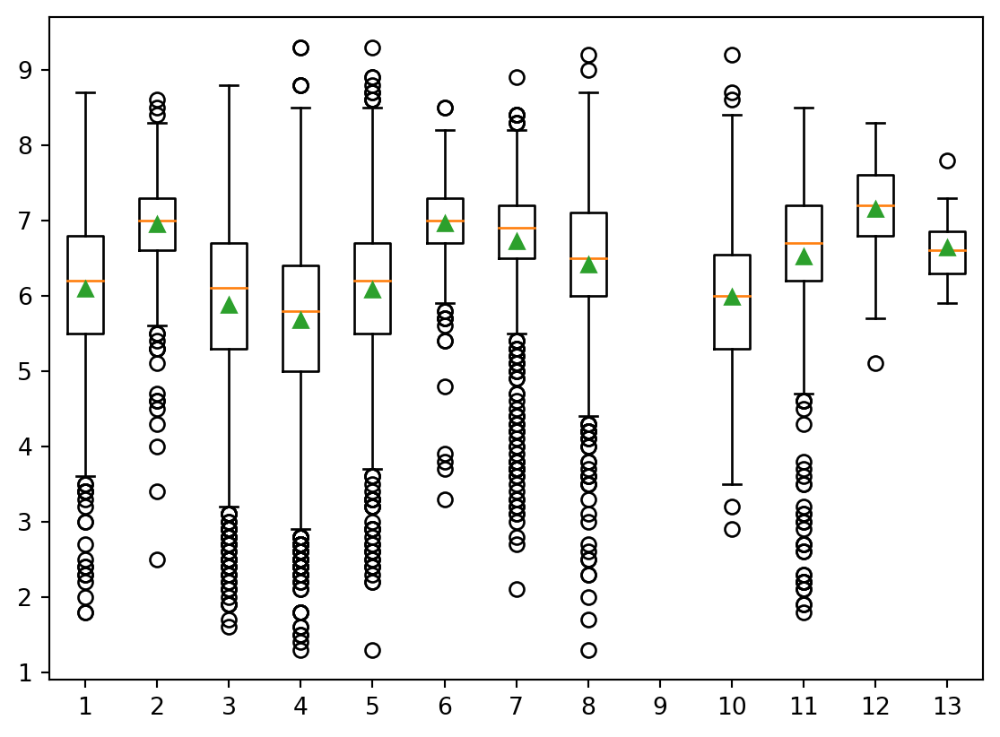
uma outra forma de plotar um Boxplot é utilizando a library seaborn
import seaborn as sns
sns.boxplot(x='decada', y='nota_imdb', data=imdb_filmes, showmeans=True)
plt.title('Distribuição de notas IMDB por Década')
plt.ylabel('IMDb Rating')
plt.show()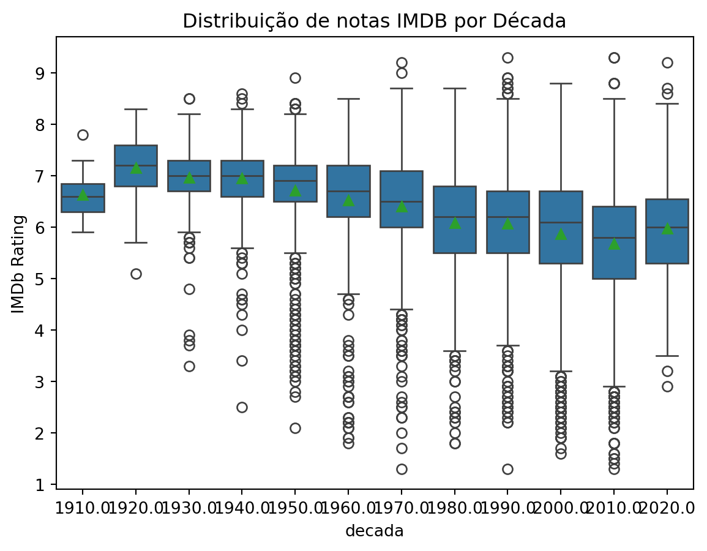
O gráfico ficou ruim de visualizar, porém, é possível alterar as dimensões de qualquer gráfico matplotlib, utilizando a opção: plt.figure(figsize=(15, 8)). Também podemos mudar a cor de cada caixa.
plt.figure(figsize=(15, 8))
sns.boxplot(x='decada', y='nota_imdb', hue='decada', data=imdb_filmes, showmeans=True)
plt.title('Distribuição de notas IMDB por Década')
plt.ylabel('IMDb Rating')
plt.show()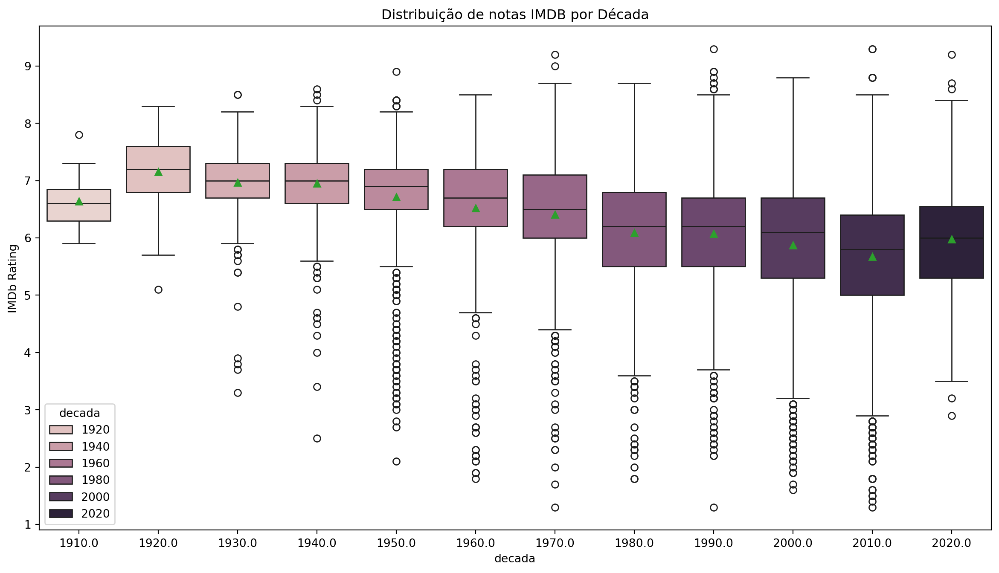
Gráfico de Histograma
Um histograma representa dados usando barras de alturas diferentes. Geralmente, cada barra agrupa números em intervalos em um histograma. Quanto mais alta as barras, mais dados se encaixam nesse intervalo. É usado para exibir a forma e a dispersão de amostras de um conjunto de dados contínuos. Por exemplo, podemos usar um histograma para medir as frequências de resposta da variável nota_imdb .
O Histograma serve para observar a distribuição dos dados e eventualmente serve para comparar mais de uma distribuição.
plt.hist(imdb_filmes['nota_imdb'], color='darkred', bins=30, edgecolor='black')
plt.xlabel('Nota IMDb')
plt.show()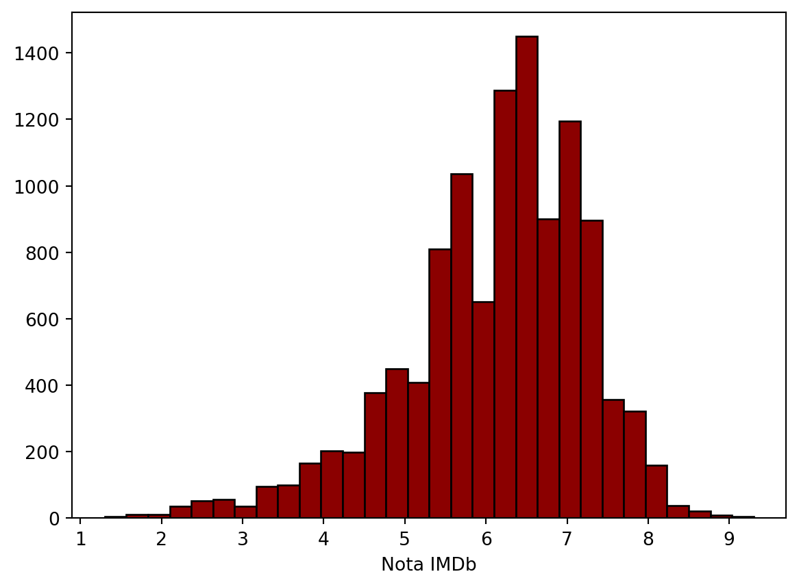
também podemos utilizar seaborn para criar um histograma:
sns.histplot(data=imdb_filmes, x='nota_imdb',
bins=30, color='darkblue')
plt.xlabel('Nota IMDb')
plt.show()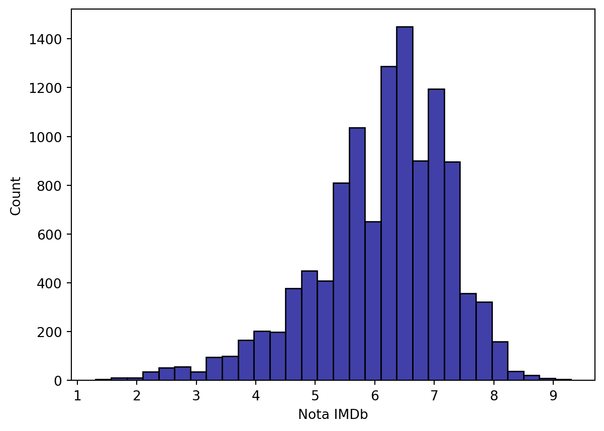
Gráfico de Pizza
imdb_filmes['lucro']=(imdb_filmes['receita']-imdb_filmes['orcamento']) > 0
lucratividade = imdb_filmes['lucro'].value_counts()
labels = ['Com Lucro', 'Sem Lucro']
sizes = lucratividade.values
plt.pie(sizes, labels=labels, autopct='%1.1f%%', startangle=40)
plt.title('Proporção de filmes lucrativos e não lucrativos')
plt.axis('equal')
plt.show()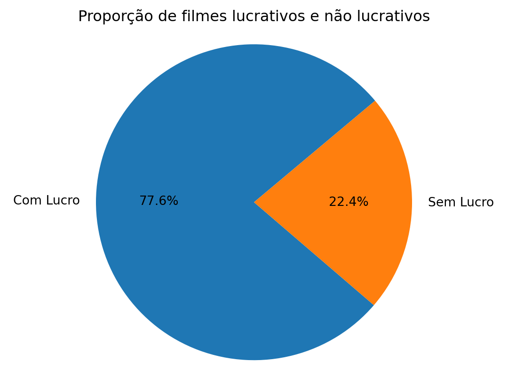
Podemos alterar as cores da nossa pizza utilizando cores = ['cor_1','cor_2',...,'cor_n'].
cores = ['#66b3ff','darkred']
plt.pie(sizes, labels=labels, autopct='%1.1f%%', startangle=180, colors=cores)
plt.title('Proporção de filmes lucrativos e não lucrativos')
plt.axis('equal')
plt.show()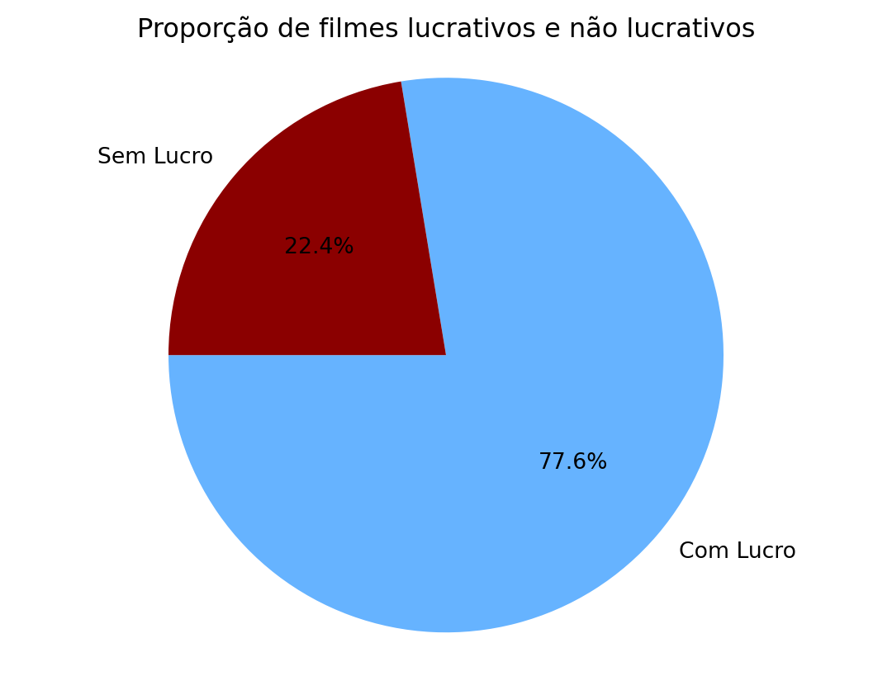
Mapas de Correlação
num_cols = imdb_filmes.select_dtypes(include=['int64', 'float64'])
corr_matrix = num_cols.corr()
sns.heatmap(corr_matrix, annot=True, cmap='coolwarm')
plt.title('Heatmap de Correlações')
plt.show()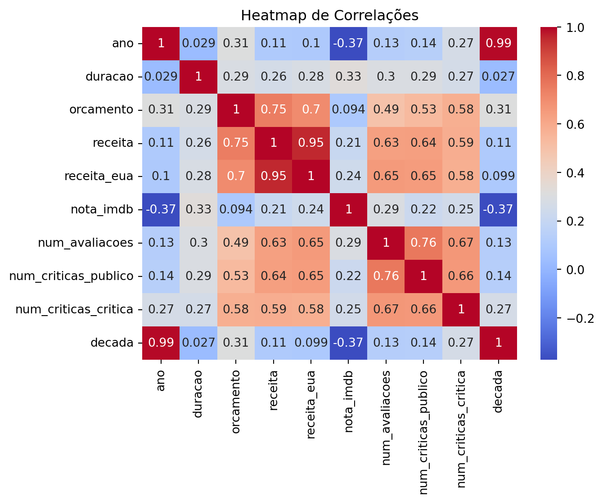